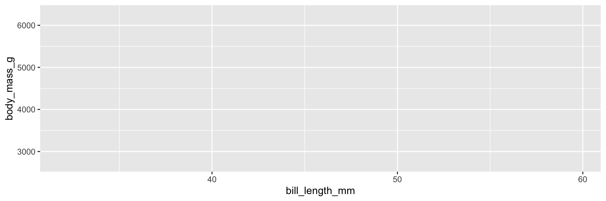
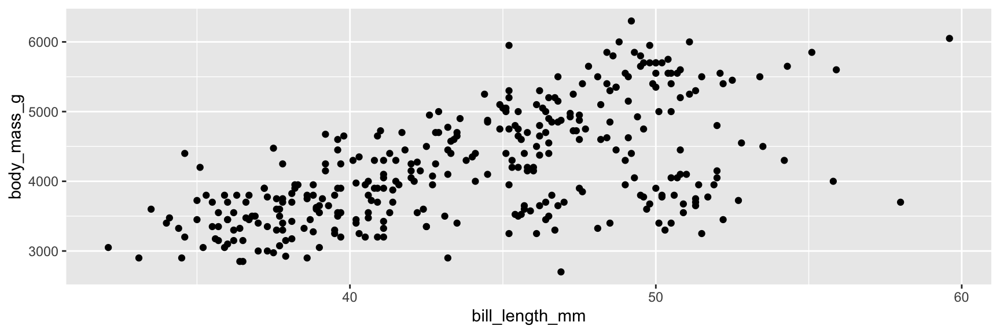
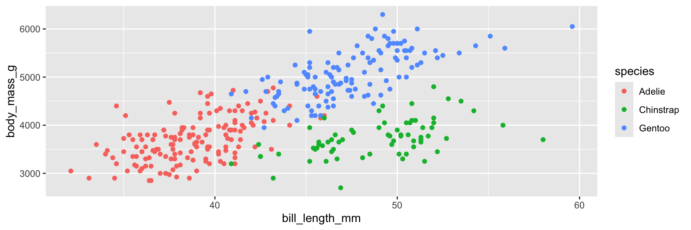
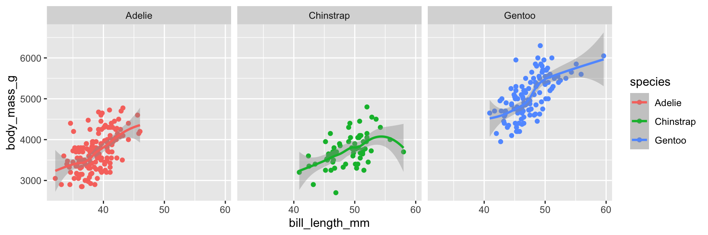
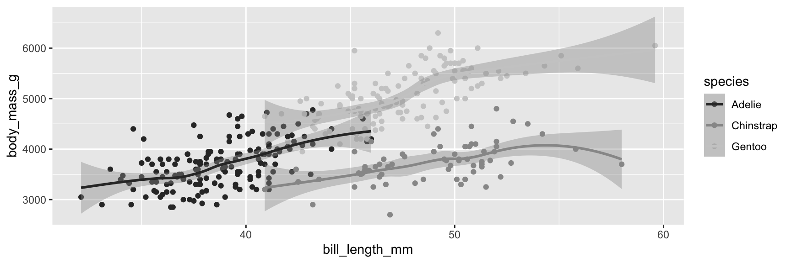
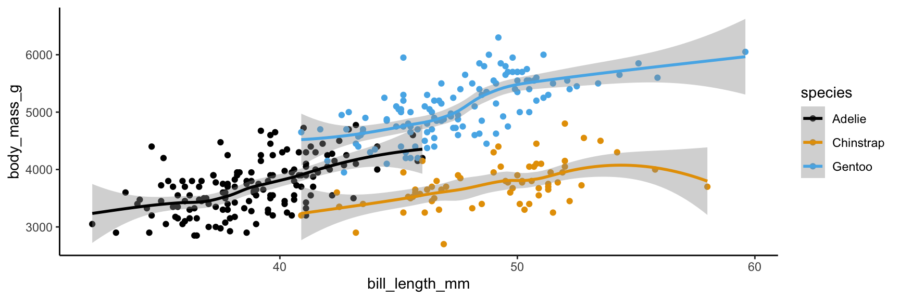
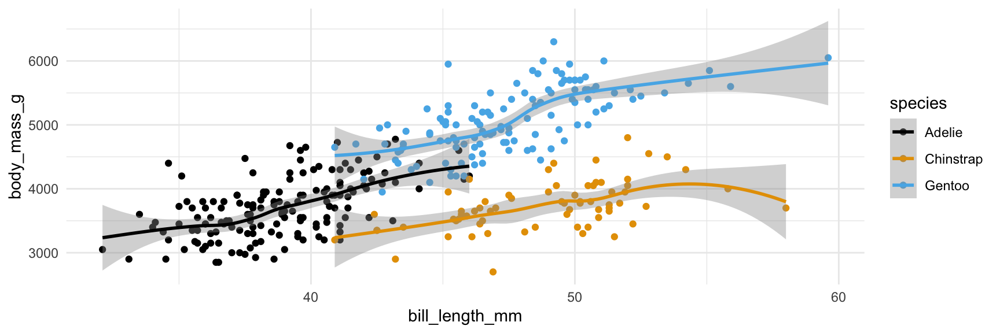
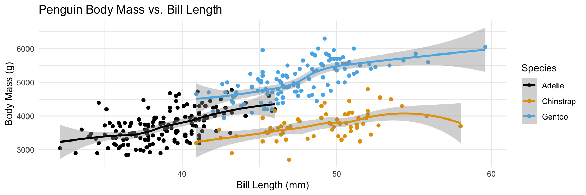
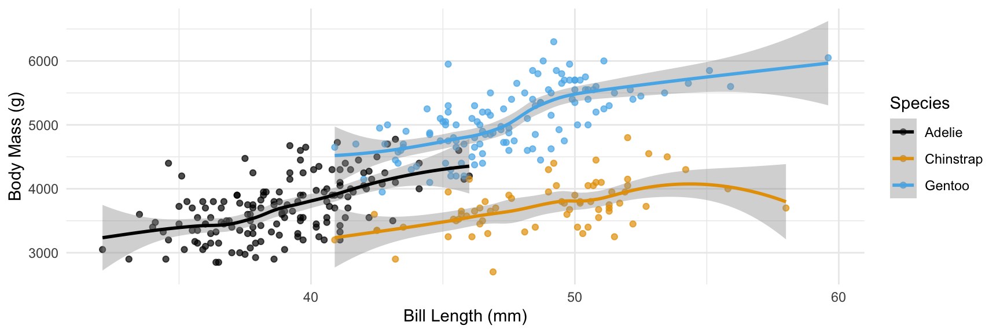
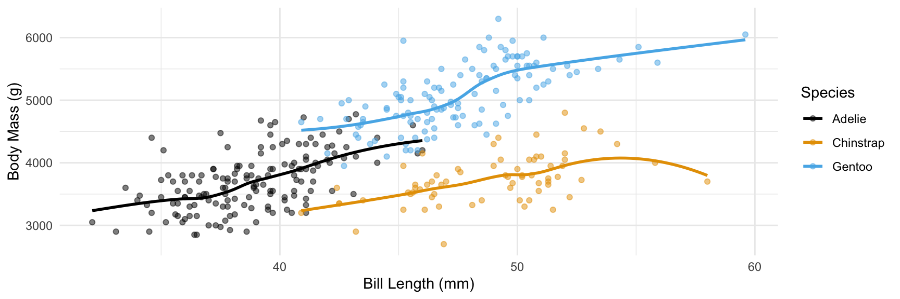

I have office hours today! 1:00-3:00 PM in Old Chemistry 203/203B.
We will start grading your ae repositories next week - make sure you have them ready to go.
First ‘real’ lab is on Monday; the topic will be data visualization (what we are starting today).
Outline
Last time:
We introduced you to the course toolkit.
You cloned your ae repositories and started making some updates in your Quarto documents.
You commited and pushed your changes back.
Today:
We will introduce data visualization.
You will pull to get today’s application exercise file.
You will work on the new application exercise on data visualization, commit your changes, and push them.
From last time
ae-01-meet-the-penguins
Go to RStudio, confirm that you’re in the ae project, and open the document ae-01-meet-the-penguins.qmd.
Common problems:
The environment used by Quarto when rendering starts EMPTY - it does not see what you see in your environment.
Using functions that cause a popup (like View() ) are not going to work when you render a document. Either use a comment (with #) to remove them, or just delete before rendering!
Make sure you commit and then PUSH! Just committing is not enough!
Data visualization
Thoughts on this plot?
More Penguins
Start plotting!
How can you create something like this???
The ggplot2 package has the plotting functions you need!
ggplot2 is a part of the tidyverse package - when you load tidyverse, you also load ggplot2
ggplot(data = penguins, mapping =aes(x = bill_length_mm, y = body_mass_g))
Argument names
It’s common practice in R to omit the names of first two arguments of a function:
Instead of
ggplot(data = your_data, mapping =aes(x = x_variable, y = y_variable))
Use
ggplot(your_data, aes(x = x_variable, y = y_variable))
Step 3. Map variables to aesthetics
Mappercent_yes to the yaesthetic
ggplot(data = penguins, mapping =aes(x = bill_length_mm, y = body_mass_g))

Step 3. Map variables to aesthetics
Mappercent_yes to the yaesthetic
ggplot(penguins, aes(x = bill_length_mm, y = body_mass_g))
Step 4. Represent data on your canvas
with a geom
ggplot(penguins, mapping =aes(x = bill_length_mm, y = body_mass_g)) +geom_point()
Warning: Removed 2 rows containing missing values or values outside the scale
range (`geom_point()`).
Step 4. Represent data on your canvas
Adding geom_point() resulted in the following warning:
Warning: Removed 2 rows containing missing values or values outside the scale
range (`geom_point()`)
Step 4. Represent data on your canvas
with a geom
ggplot(penguins, mapping =aes(x = bill_length_mm, y = body_mass_g)) +geom_point()

Step 5. Map variables to aesthetics
Mapspecies to the coloraesthetic
ggplot(penguins, mapping =aes(x = bill_length_mm, y = body_mass_g, color = species)) +geom_point()
Step 5. Map variables to aesthetics
Mapspecies to the coloraesthetic
ggplot(penguins, mapping =aes(x = bill_length_mm, y = body_mass_g, color = species)) +geom_point()

What exactly are aesthetics? They map from a variable to a plot feature.
x and y axes
color, shape, size of points
Step 6. Represent data on your canvas
with another geom
ggplot(penguins, mapping =aes(x = bill_length_mm, y = body_mass_g, color = species)) +geom_point() +geom_smooth()
`geom_smooth()` using method = 'loess' and formula = 'y ~ x'
Warning: Removed 2 rows containing non-finite outside the scale range
(`stat_smooth()`).
Warning: Removed 2 rows containing missing values or values outside the scale
range (`geom_point()`).
Warnings and messages
Adding geom_smooth() resulted in the following warning:
`geom_smooth()` using method = 'loess' and formula = 'y ~ x'
It tells us the type of smoothing ggplot2 does under the hood when drawing the smooth curves that represent trends for each species.
Going forward we’ll suppress this warning to save some space.
Step 6. Represent data on your canvas
with another geom
ggplot(penguins, mapping =aes(x = bill_length_mm, y = body_mass_g, color = species)) +geom_point() +geom_smooth()
Step 7. Split plot into facets
Use facet_wrap to make sub-plots
ggplot(penguins, mapping =aes(x = bill_length_mm, y = body_mass_g, color = species)) +geom_point() +geom_smooth() +facet_wrap(~island)
Step 7. Split plot into facets
We can facet by other variables!
ggplot(penguins, mapping =aes(x = bill_length_mm, y = body_mass_g, color = species)) +geom_point() +geom_smooth() +facet_wrap(~species)

A note on facets:
Which plot do you think made it easier to compare between penguin species?
ggplot(penguins, mapping =aes(x = bill_length_mm, y = body_mass_g, color = species)) +geom_point() +geom_smooth()
Step 8. Use a different color scale
With a scale_color_ function
ggplot(penguins, mapping =aes(x = bill_length_mm, y = body_mass_g, color = species)) +geom_point() +geom_smooth() +scale_color_grey()

Step 8. Use a different color scale
With another scale_color_ function
ggplot(penguins, mapping =aes(x = bill_length_mm, y = body_mass_g, color = species)) +geom_point() +geom_smooth() +scale_color_colorblind() #this is from ggthemes
Step 9. Apply a different theme
With a theme_ function
ggplot(penguins, mapping =aes(x = bill_length_mm, y = body_mass_g, color = species)) +geom_point() +geom_smooth() +scale_color_colorblind() +theme_minimal()
Step 9. Apply a different theme
With a theme_ function
ggplot(penguins, mapping =aes(x = bill_length_mm, y = body_mass_g, color = species)) +geom_point() +geom_smooth() +scale_color_colorblind() +theme_classic()

Step 9. Apply a different theme
With a theme_ function
ggplot(penguins, mapping =aes(x = bill_length_mm, y = body_mass_g, color = species)) +geom_point() +geom_smooth() +scale_color_colorblind() +theme_solarized() #this is from ggthemes
Step 9. Apply a different theme
With a theme_ function
ggplot(penguins, mapping =aes(x = bill_length_mm, y = body_mass_g, color = species)) +geom_point() +geom_smooth() +scale_color_colorblind() +theme_minimal()

Step 10. Add labels
With labs() function
ggplot(penguins, mapping =aes(x = bill_length_mm, y = body_mass_g, color = species)) +geom_point() +geom_smooth() +scale_color_colorblind() +theme_minimal() +labs(x ="Bill Length (mm)", y ="Body Mass (g)", color ="Species", title ="Penguin Body Mass vs. Bill Length")

Step 11. Set transparency of points
with alpha
ggplot(penguins, mapping =aes(x = bill_length_mm, y = body_mass_g, color = species)) +geom_point(alpha =0.1) +geom_smooth() +scale_color_colorblind() +theme_minimal() +labs(x ="Bill Length (mm)", y ="Body Mass (g)", color ="Species")
Step 11. Set transparency of points
with alpha
ggplot(penguins, mapping =aes(x = bill_length_mm, y = body_mass_g, color = species)) +geom_point(alpha =0.7) +geom_smooth() +scale_color_colorblind() +theme_minimal() +labs(x ="Bill Length (mm)", y ="Body Mass (g)", color ="Species")

Step 12. Hide standard errors of curves
with se = FALSE
ggplot(penguins, mapping =aes(x = bill_length_mm, y = body_mass_g, color = species)) +geom_point(alpha =0.5) +geom_smooth(se =FALSE) +scale_color_colorblind() +theme_minimal() +labs(x ="Bill Length (mm)", y ="Body Mass (g)", color ="Species")

How am I supposed to remember all of this?!
You aren’t!!!
It’s important to (eventually) know and remember the key ideas: what does changing a theme do? What are aesthetics? What is a geom?
You do not need to memorize a comprehensive list of all of the different geoms, themes, color scales, etc.
There will be a few fundamentals we expect you to know – more on that later!